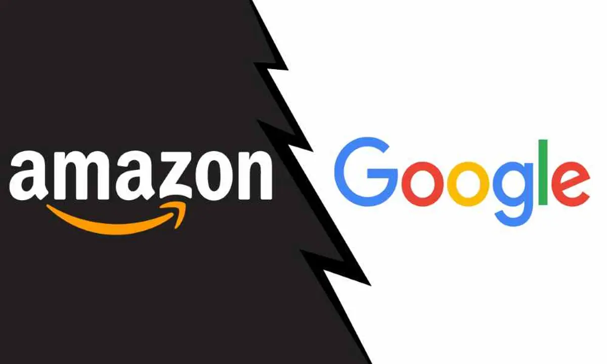
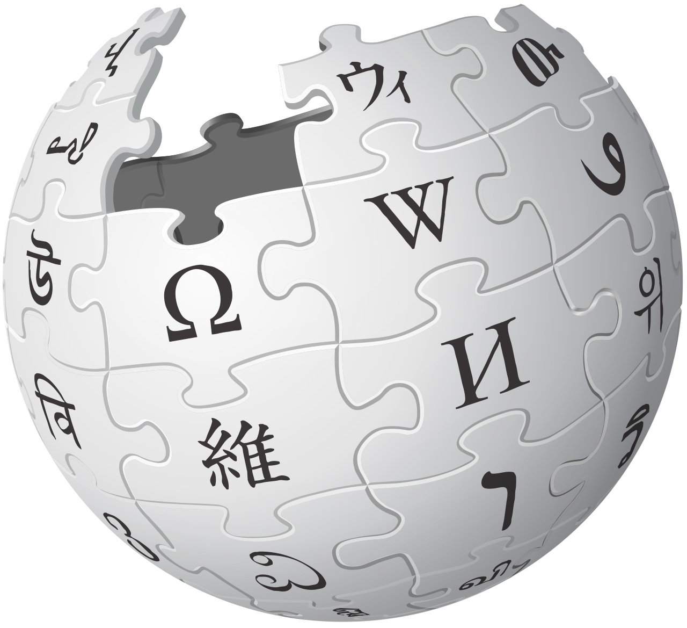
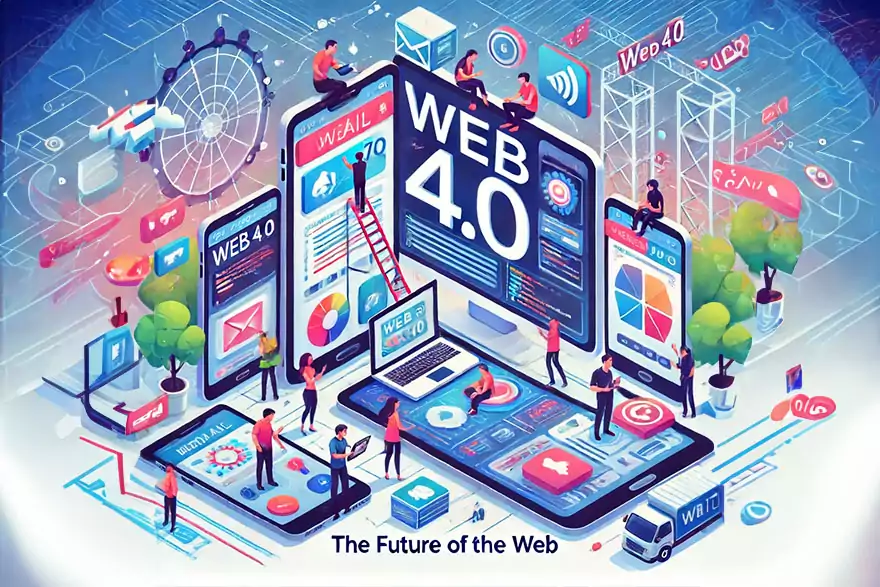

Web 1.0
Web 1.0 (1990-2000)
La Web 1.0 representa la primera etapa de la World Wide Web.
1993
Existían alrededor de 600 sitios web.
1994
Se alcanzan aproximadamente 10 000 sitios web.
1996
La cifra crece a más de 100 000 sitios web.
Creación de compañías (1990-1999)

1994
La gran compañía de compras y tecnología, Amazon, se creó en este año por Jeff Bezos. La página del sitio se creó un año después.

1998
El más famoso buscador se creó por Larry Page y Sergey Brin en 1996, lanzándose al público en 1998.
En general, la Web 1.0 funcionaba como páginas estáticas destinadas principalmente a mostrar información.
VolverWeb 2.0
Web 2.0 (2000-2010)
2001
WIKIPEDIA
Se crea la enciclopedia libre, en donde toda persona puede contribuir a la aportación de información sobre casi cualquier cosa.

2004
Facebook
Se crea una red social donde las personas pueden conectar con amigos, compartir momentos y construir comunidades digitales, transformando la identidad personal en un perfil interactivo y público.

2005
Tecnología AJAX
Se desarrolla una técnica de desarrollo web que permite que las páginas se actualicen de forma asíncrona, intercambiando datos con el servidor por detrás, para que el usuario pueda seguir interactuando sin necesidad de recargar todo el sitio.
2006
Amazon EC2
Se proporciona capacidad de cómputo escalable en la nube, permitiendo a los desarrolladores alquilar servidores virtuales bajo demanda para ejecutar sus propias aplicaciones sin preocuparse por el hardware físico.
Web 3.0
Web 3.0 (2010-2020)
2010
Aparición de la web 3.0
La Web 3.0 comienza a funcionar de manera más tangible, marcando un salto tecnológico en la forma de usar Internet.
2014
HTML 5
Se estandariza HTML5, permitiendo aplicaciones web más semánticas, interactivas y multimedia, base tecnológica para el desarrollo de la Web 3.0.

2015
Expansión de la web semántica
Se impulsa el uso de metadatos semánticos y ontologías, permitiendo que las máquinas comprendan relaciones entre datos.
2018
Personalización de la web
La Web 3.0 adapta contenidos según gustos, búsquedas y actividad del usuario.
2020
Gestión en la nube
La web se ejecuta y administra en la nube, accesible desde cualquier dispositivo.
2019
Fase temprana y conceptualización
La Web3 estaba en una fase temprana de desarrollo técnico y conceptual, con creciente interés en la comunidad cripto, comenzando a transformar la teoría de la descentralización en aplicaciones prácticas.
Volver
Web 4.0
Web 4.0 (2021-2023)
2021
Búsqueda inteligente
Los sistemas web comienzan a descubrir información relevante automáticamente.

2022
Alta personalización y complejidad
La web ofrece experiencias altamente personalizadas, ejecutadas por máquinas con mayor autonomía.

2023
Transición hacia la Web 4.0
Los sistemas web comienzan a descubrir información relevante automáticamente.
Web 5.0
Web 5.0 (2025-presente)
2025
Nace el concepto de Web 5.0
Web emocional y descentralizada.
Apps web enfocadas en la identidad digital del usuario.

2026
Interacción emocional
Aplicaciones que reconocen emociones mediante voz, texto y gestos.
Respuestas adaptadas al estado del usuario.
La aportación a la Web 5.0 consiste en promover el uso responsable, humano y ético de la tecnología.
Busco que las aplicaciones web no solo sean inteligentes, sino también empáticas, respetuosas con la privacidad y centradas en el bienestar del usuario.
Aporto al crear, usar y difundir contenidos que fomentan la comunicación positiva, el aprendizaje y la inclusión digital.
Además, impulso el uso consciente de la inteligencia artificial como una herramienta de apoyo y no de sustitución del pensamiento humano.
Volver